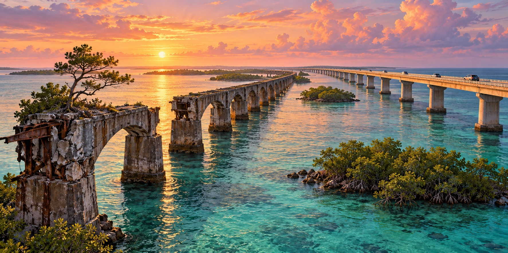

Rebuilding the Overseas Highway
How Modern Transportation Emerged From the Ruins of Flagler’s Railroad

A tree growing from the abandoned roadbed of the old Seven Mile Bridge is a striking reminder that infrastructure can outlive the job it was built to do. Locals call the tree Fred. Nearby, the modern highway carries road traffic through the Keys, while remnants of the earlier railroad and highway show how the same corridor has served successive generations.
A Highway That Already Existed, With a Forty-Mile Hole
An Overseas Highway existed before the 1935 hurricane. The original road opened on January 25, 1928 in two segments, one from the mainland through Key Largo to Lower Matecumbe Key and one from No Name Key to Key West. Between them lay a forty-mile gap crossed by an automobile ferry, a trip of about four hours that a modern driver covers in under one.
The 1935 storm destroyed about forty miles of railroad track, but Flagler’s bridges largely survived, leaving a set of sturdy, storm-tested structures with no railroad left to use them.
From Railroad to Highway
After the 1935 Category 5 hurricane ended rail service, Florida acquired the railway corridor and adapted surviving structures for automobiles. The conversion joined highway sections previously linked by ferries. A continuous Overseas Highway opened in 1938, transforming travel between the mainland and Key West.
A Road Built for Another Era
The converted road was narrow by modern standards. Drivers traveled on structures originally designed to carry trains, with the sea visible on both sides. Its usefulness did not mean it was a final solution: heavier traffic and changing vehicle standards eventually required another generation of bridges.
Realigning the Route
Further realignment during World War II shifted more roadway onto the old railroad corridor. Reusing that route changed how vehicles moved through the islands and reinforced the importance of the Keys connection to military and civilian transportation.
Replacing What Was Already Rebuilt Once
As traffic increased, the state replaced converted railroad structures with bridges designed for highway use. The modern Seven Mile Bridge opened in 1982. The old and new bridges side by side make the sequence visible: railway construction, hurricane destruction, highway conversion and modern replacement.
Keeping the Old Corridor
Parts of the old railway corridor remain as historic structures and recreational routes. The old Seven Mile Bridge offers a connection to Pigeon Key for walking and cycling. Keeping these remnants allows visitors to see how a transportation system changed without erasing every trace of what came before.
Quick Facts
| First highway | 1928 road sections linked by an automobile ferry |
|---|---|
| Highway opens | Continuous road connection opened in 1938 |
| 1944 realignment | Wartime realignment reused more of the railroad corridor |
| Modern Seven Mile Bridge | Opened in 1982 |
Did You Know?
A wild pine tree named Fred grows on the old Seven Mile Bridge.
Dismantled rails, painted white, became the highway’s guardrails.
Vocabulary
Right-of-way: land or a corridor owned or used for a road or railroad.
Realignment: changing the route of a road.
Precast segmental: built from concrete pieces cast elsewhere and assembled on site.
Discussion Questions
1. Why did the state convert the railroad bridges instead of building new ones?
2. What does the story of Fred the tree suggest about old infrastructure?
Related Articles
FLH-0030 — The Storm That Destroyed Flagler’s Railroad
FLH-0033 — Lost Bridges of Old Florida
FLH-0005 — The Labor Day Hurricane of 1935
FLH-0025 — The Flood That Changed South Florida
Sources
Keys Weekly. “Keys History: Original Seven Mile Bridge,” “The Seven Mile Bridge and Pigeon Key,” and “The Seven(ish) Mile Bridges.” keysweekly.com
Encyclopaedia Britannica. “Seven Mile Bridge.” britannica.com
AARoads Wiki. “Overseas Highway.” wiki.aaroads.com
Wikipedia. “Overseas Highway” and “Seven Mile Bridge.”
FDOT — Historic highway bridges of Florida